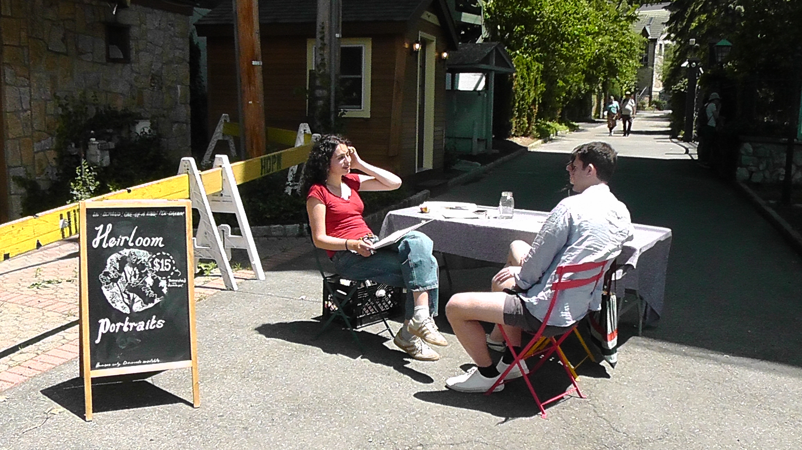
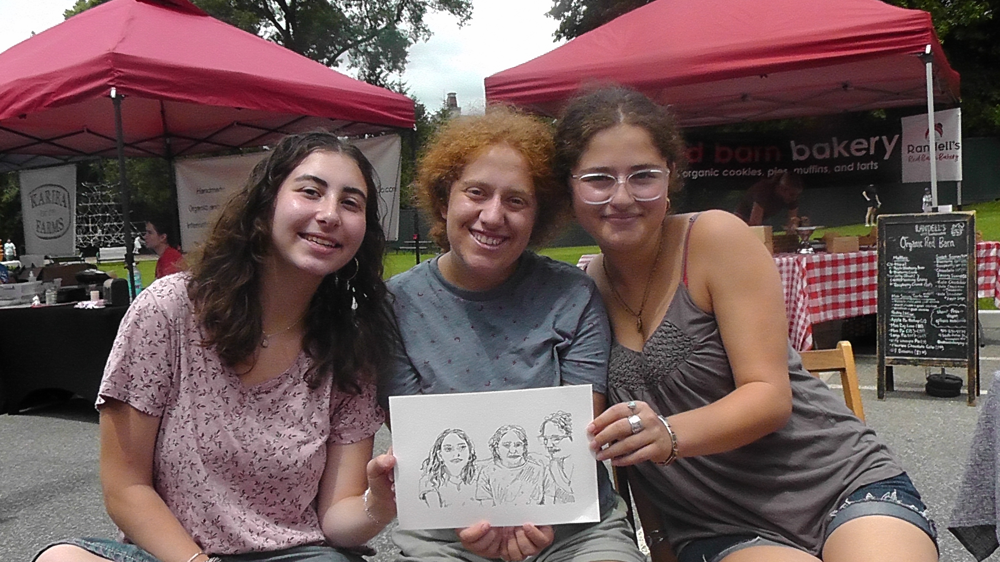
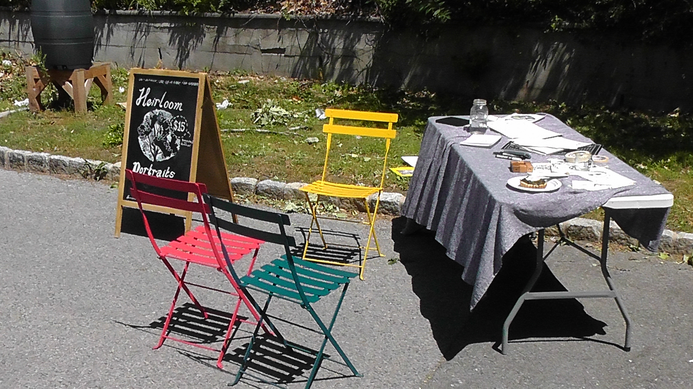

Two Saturdays ago, I ended my on-demand summertime portrait service for the season. I spent the spring in Italy drawing people and friends, and I miseed the farmer’s market, and I wanted to see if I could draw more people back at home over the summer. I called my project Heirloom Portraits, drew a logo and posted on Instagram. On Sunday, June 7th, at 9:00 AM, I set up at the Irvington Farmer’s Market.
Three months later, I would like to explain some things I learned, some parts of the project, goals, and ideas I am generally inspired about. I feel as though Heirloom Portraits has one of my most successful works, and I am incredibly happy with both the concept and the execution of the project. The service consists of drawing people, mostly strangers, at my local farmer’s market, with a ballpoint pen, talking to the subject, finishing the drawing, and giving it to them.
Going into the work, I was primarily interested in two goals: meeting strangers, and drawing people. I wanted to get better at drawing, and talk to lots of people. I wanted to have more of my artwork out in the world, and I wanted some cash. After a summer of weekend mornings, I can safely say that all of my goals were achieved.
It was hard to get up at 8 AM on a Saturday, and often difficult to reckon with children who did not want to be drawn, or to sit still. It was also often not easy to wrangle the customers I really wanted to draw into sitting for a portrait (I will discuss this part later). However, Heirloom Portraits was magical, and I am extremely proud of the talking, drawing, and designing I did. It was exciting to think about the formal elements of the project: Where should the chairs be positioned? Should we sit in the sun or the shade? How should the table be laid out?, and also the informal ones: What’s a reasonable price? What attracts customers? What kind of customers do I want to attract?
Over ten weeks, I drew over 100 people. By the second half of the summer, I started drawing more and more couples and groups, which I enjoyed. It was nice to talk to couples and hear about how they met and their relationship, and I liked trying to capture a dynamic between multiple people. Upon seeing my table, people liked to confess that they were artists too, which I really loved. It was wondrous to realize how many people among us have their own painting, drawing, jewelry, writing, and watercolor practices. Everyone is making their own kind of work.
On the other side of this though, was the notion that I was an artist and others are not. Parents would bring their children and kindly point, “Look, she’s an artist!”, or amazed customers would say, “oh I could never do that”. People would ask when or how I became an artist, and would treat me as if I had some sort of magic they did not have. This was disappointing and disheartening, why am I an artist and why isn’t everyone else? We all started out drawing, I just didn’t stop. I wish people would believe in their creative abilities more, and realize that drawing is a simple skill built with practice, and that the thing that makes someone an artist is believing in oneself. The only thing that made me an artist were the two metal chairs and a plastic table with a blue tablecloth.
There was a hand-drawn black A-frame sign near the table with a drawing of a tree, and text above the tree, in large letters, “HEIRLOOM PORTRAITS”, and then below the tree, in small letters, “Suggested Donation: $15”, and then in even smaller letters, “One-Of-A-Kind! Humans Only”. Most people had no problem with the suggested donation, and many customers kindly paid with a twenty. Most customers paid in cash, but the moms and dads of young children paid with the classic Venmo, or occasionally the elusive Zelle, or Cashapp. I was happy earning a small amount of money from them, and felt it would be wrong to charge less. I think one needs to pay a certain amount of money for an object to feel valuable. People felt good about spending money on art, and they wanted to support a ‘local artist’. I tried to remind people that I would accept other forms of donation, like song or dance, or food, or really anything, but I was only ever paid in cash. Maybe they felt like that would be cheating, but I would have enjoyed it.
Many humans do not want to see themselves in other peoples eyes. They are afraid of seeing the parts they don’t like, and the amount of people who pleaded with me not to make them ugly, to avoid their wrinkles, grey hairs, or imperfections was downright surprising. I was saddened by how even in old age, people remain insecure and afraid of their own image. Were they afraid of being percieved without control? Would an unflattering drawing ruin their day?

This concept of perception and objectivity affected the formal side of my drawings, too. With time I realized how valuable it is to avoid overdrawing, especially with the pen, which can overemphasize certain subtleties that can age or distort a person. I drew some children who accidentally looked very old. The pen is a strong tool, and as I move to other media like graphite and color pencil, I am excited to explore softer marks and shades.One subtle phenomenon I notice that happens with my drawings it that they appear more and more like the subject over time. Maybe this is what makes them ‘heirlooms’, but I also just really like the word. It is scary to see yourself through someone elses eyes, rather than a photo. Our increasing connection to mobile devices can easily make us believe that the true parts of the world, the real versions of things, are captured via phones, as if an iPhone photo is the most objective form of photography, or how a song recorded on Spotify is the most real version of the song. Apps and digital tools are no longer skeumorphic recreations of real-world objects, but now exist solely to be themselves. High-resolution recorded videos might look more like the real world than low-resolution ones, but they are not any closer to the plane of reality. Popularity does not necessarily correlate with objectivity.
The portraits I sketched aim to capture some truths that a photo cannot, and they also act as memorabilia, or ephemera, for memories of a nice day at the farmer’s market. I hope they will bring some joy to the season’s customers, and even if not it feels good to know that more of my art is circulating in the world than ever.
I will likely run the portrait service again, maybe for shorter periods of time, or maybe for another season. I am interested in continuing to explore media, speed, and accuracy of portrait. The arrangement of strangers coming to sit and talk is still extremely intriguing to me, and it was very pleasant to get to know my community better. I am excited seeing portrait-goers around town, and it does make me happy that they think of me as an artist, I just wish they would think of themselves as artists too.
Over a few sessions, I briefly taught some kids and one adult a few methods of drawing, how I like to capture things, and some advice on value, shading, and line. I’ve also recently started drawing things with my boyfriend, and during an internship I casually taught a coworker a few things about sketching. The notion of teaching drawing is enticing, mostly because I want to make other people be more confident about being artists themselves.
Heirloom Portraits taught me about other people, and the everyday person’s relation to physical art. This reflected back into learning things about myself, as an artist and a person (what’s the difference?). Sketching and drawing is meditative and peaceful. It brings slowness and pleasure, and it reminds a person how beautiful the world really is. Pens and paper are easily accessible, powerful tools. On the hot summer mornings, I met many children who told me eagerly, how they love to draw too. For you, I hope you start sketching, and for them, I hope they don’t stop.
